This tutorial shows you how to add a second route to the
blueprint.xml file in the CBRroute
project. The second route:
Takes messages directly from the terminal end of the first route's otherwise branch
Sorts the messages according to customers' country
Sends each message to the corresponding
CBRroute/target/messages/<country>directory
In this tutorial you will:
Reconfigure the existing route for direct connection to a second route
Add a second route to your
<camelContext>Configure the new route to take messages directly from the otherwise branch of the first route
Add a content-based router to the new route
Add and configure a message header, logging, and target destination to each output branch of the new route's content-based router
To complete this tutorial you will need the CBRroute project you modified in To Add a Content-Based Router.
![[Note]](imagesdb/note.png) | Note |
|---|---|
If you skipped any tutorial after To Create a New Route, you can use the
prefabricated |
To configure the existing route for direct connection with the new route:
Open your
CBRroute/src/main/resources/OSGI-INF/blueprint/blueprint.xmlin the route editor.On the canvas, select the Route_route1 container to open its properties in the Properties editor.
Scroll down to the Shutdown Route property and select from the drop-down menu.
On the canvas, select the terminal file node To_Valid to display its properties in the Properties editor.
In the Uri field, delete the existing text, and then enter
direct:OrderFulfillment.In the Id field, enter
_Fulfill.
| Note |
|---|---|
Instead of repurposing the existing To_Valid terminal file node, you could have replaced it with a > component, configuring it with the same property values as the repurposed To_Valid node. |
| Note |
|---|---|
The route editor displays each route in a multiroute routing context in its own Route_ container. |
To add a route to the routing context:
In the Palette, open the Routing drawer and select the Route (
 ) pattern.
) pattern.Drag the Route pattern to the canvas and drop it next to the Route_route1 container:
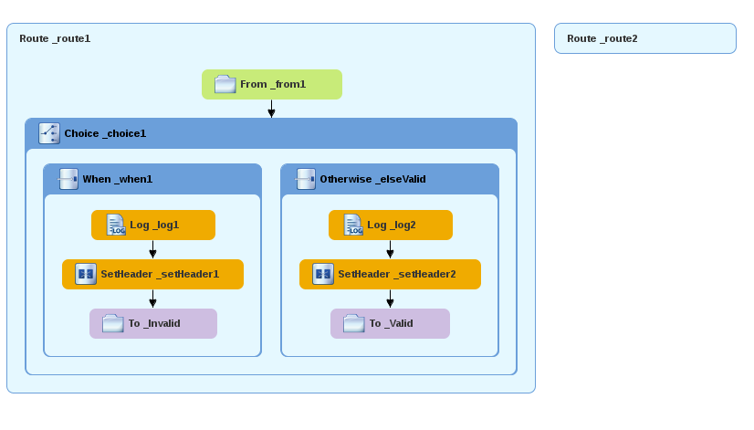The Route pattern becomes the Route_route2 container node on the canvas.
Click the Route_route2 container node to display its properties in the Properties editor.
Leave each of the properties as is.
| Note |
|---|---|
As your multiroute routing context grows in complexity, you may want to focus the route editor on an individual route while you work on it. To do so, in Project Explorer, double-click the route you want the route editor to display on the canvas; for example Route_route2: 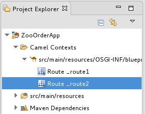 To display all routes in the routing context on the canvas, double-click the
project's |
In the Palette, open the Components drawer and drag a Direct component (
 ) to the canvas and drop it in the
Route_route2 container: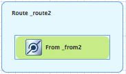
) to the canvas and drop it in the
Route_route2 container: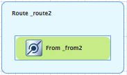The Route_route2 container expands to accommodate the From_from2 node.
On the canvas, select the From_from2 node to open its properties in the Properties editor:
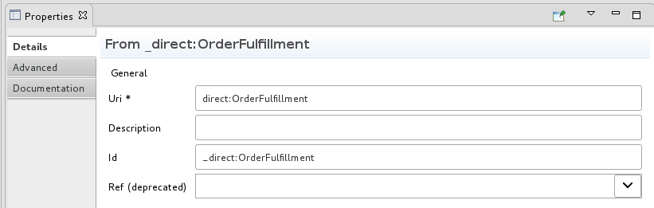In the Uri field, replace
name(followingdirect:) withOrderFulfillment, and in the Id field, enter_direct:OrderFulfillment.In the Palette, open the Routing drawer and drag a Choice (
 ) pattern to the canvas and drop it in the
Route_route2 container.
) pattern to the canvas and drop it in the
Route_route2 container.The Route_route2 container expands to accommodate the Choice_choice2 node.
In the Route_route2 container, select the
direct:OrderFulfillmentnode and drag its connector arrow over the Choice_choice2 node, then release it: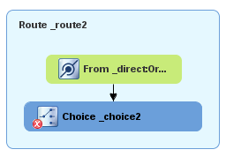In the Properties editor, leave each of the Choice_choice2 node's properties as is.
In the Palette, open the Routing drawer and drag a (
 ) pattern to the canvas and drop it in the
Choice_choice2 container: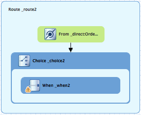
) pattern to the canvas and drop it in the
Choice_choice2 container: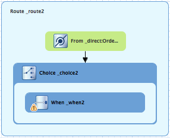The Choice_choice2 container expands to accommodate the When_when2 node.
On the canvas, select the When_when2 node to open its properties in the Properties editor:
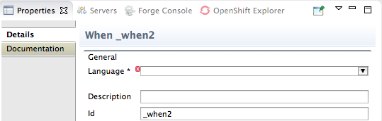Set the node's properties this way:
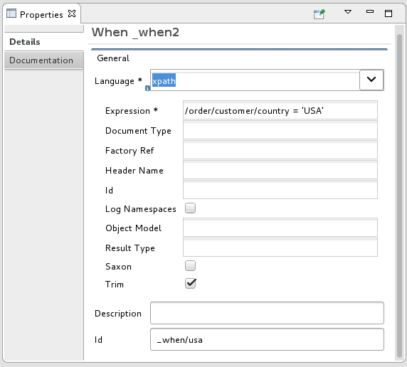Select
xpathfrom the Language drop-down menu.Enter
/order/customer/country = 'USA'in the Expression field.Leave Trim enabled.
Enter
_when/usain the Id field.
Note Once you select the expression Language, the Properties editor displays its properties in an indented list directly below the Language field. The Id property in this list sets the ID of the expression. The Id property following the Description field sets the ID of the When node.
In the Palette, open the Transformation drawer and drag the pattern to the canvas and drop on the When_when/usa node:
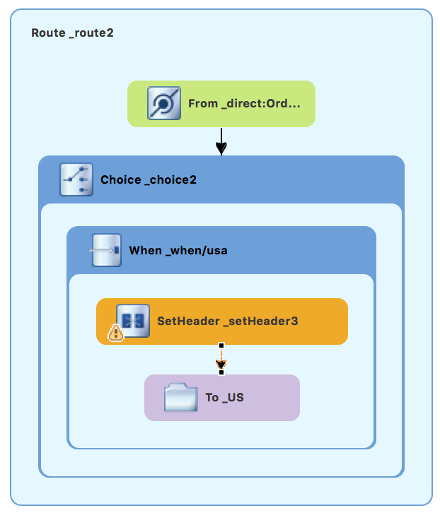The When_when/usa container expands to accommodate the SetHeader_setHeader3 node.
On the canvas, select the SetHeader_setHeader3 node to open its properties in the Properties editor:

Set the node's properties this way:
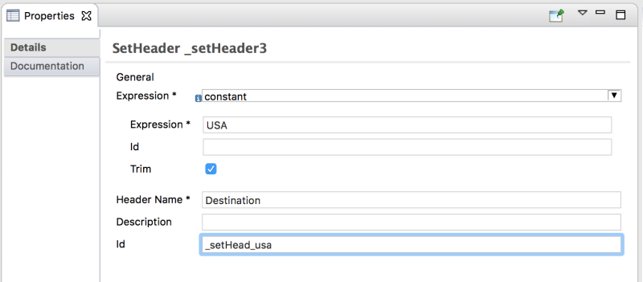Select from the drop-down menu.
Enter
USAin the Expression field.Leave Trim enabled.
Enter
Destinationin the Header Name field.Enter
_setHead_usain the Id field.
In the Palette, open the Components drawer and drag a Log component (
 ) to the canvas and drop it in the
When_when/usa container.
) to the canvas and drop it in the
When_when/usa container.The When_when/usa container expands to accommodate the Log_log3 node.
On the canvas, select the SetHeader_setHead_usa node and drag its connector arrow over the Log_log3 node, then release it:
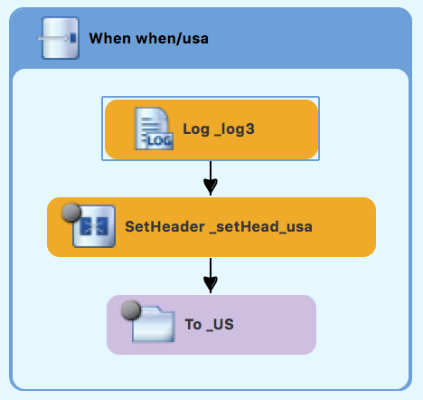On the canvas, select the Log_log3 node to open its properties in the Properties editor:
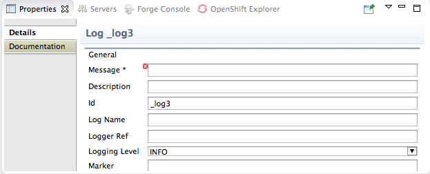In the Properties editor:
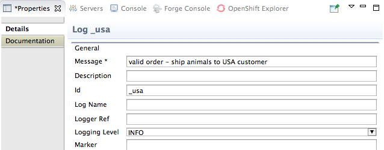Enter
Valid order - ship animals to USA customerin the Message field.Enter
_usain the Id field.Leave Logging Level as is.
In the Palette, open the Components drawer and drag a File component (
 ) to the canvas and drop it in the
When_when/usa container.
) to the canvas and drop it in the
When_when/usa container.The When_when/usa container expands to accommodate the To_to1 node.
On the canvas, select the Log_usa node and drag its connector arrow over the To_to1 node, then release it:
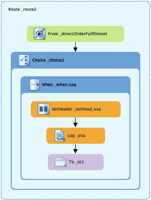In the Properties editor:
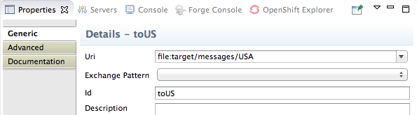Replace
directoryNamewithtarget/messages/USAin the Uri field.Enter
_USin the Id field.
On the menu bar, click > to save the routing context file.
The USA branch of Route_route2 should look like this:
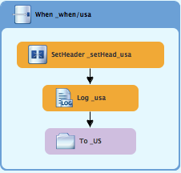
With Route_route2 displayed on the canvas:
In the Palette, open the Routing drawer and drag a When pattern (
) to the canvas and drop it in the
Choice_choice2 container: 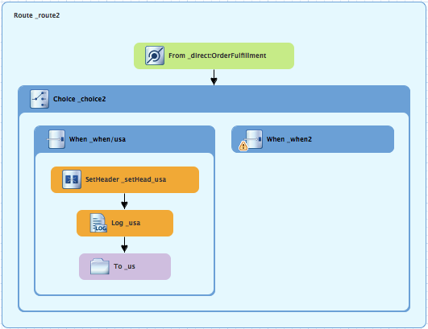The Choice_choice2 container expands to accommodate the When_when2 node.
On the canvas, select the When_when2 node to open its properties in the Properties editor.
In the Properties editor:
Select
xpathfrom the Language drop-down menu.Enter
/order/customer/country = 'Great Britain'in the Expression field.Leave Trim enabled.
Enter
_when/gbin the Id field.
In the Palette, open the Transformation drawer and drag a Set Header pattern (
 ) to the canvas and drop it on the
When_when/gb node: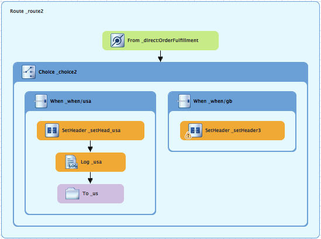
) to the canvas and drop it on the
When_when/gb node: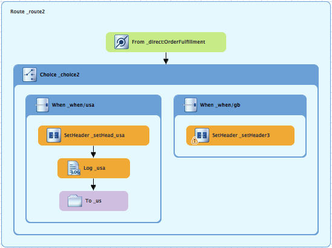The When_when/gb container expands to accommodate the SetHeader_setHeader3 node.
On the canvas, select the SetHeader_setHeader3 node to open its properties in the Properties editor.
In the Properties editor:
Select from the drop-down menu.
Enter
UKin the Expression field.Leave Trim as is.
Enter
Destinationin the Header Name field.Enter
_setHead_ukin the Id field.
In the Palette, open the Components drawer and drag a Log pattern (
) to the canvas and drop it in the
When_when/gb container.The When_when/gb container expands to accommodate the Log_log3 node.
On the canvas, select the SetHeader_setHead_uk node and drag its connector arrow over the Log_log3 node, and then release it:
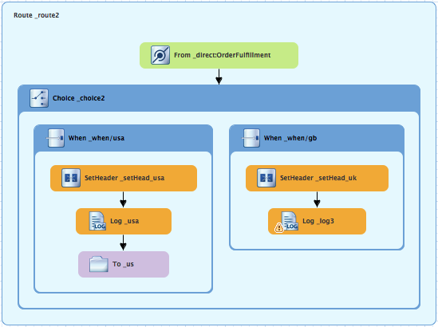On the canvas, select the Log_log3 node to open its properties in the Properties editor.
In the Properties editor:
Enter
Valid order - ship animals to UK customerin the Message field.Enter
_ukin the Id field.Leave the Logging Level as is.
From the Components drawer, drag a File pattern (
) to the canvas and drop it in the
When_when/gb container.The When_when/gb container expands to accommodate the To_to1 node.
On the canvas, select the Log_uk node and drag its connector arrow over the To_to1 node, and then release it:
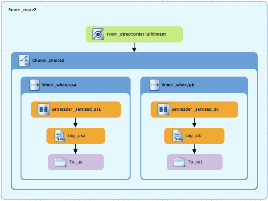On the canvas, select the To_to1 node to open its properties in the Properties editor.
In the Properties editor:
Replace
directoryNamewithtarget/messages/GreatBritainin the Uri field.Enter
_UKin the Id field.
On the menu bar, click > to save the routing context file.
The Great Britain branch of Route_route2 should look like this:
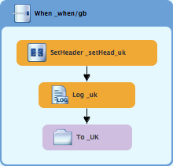
With Route_route2 displayed on the canvas:
In the Palette, open the Routing drawer and drag a When pattern (
) to the canvas and drop it in the
Choice_choice2 container: 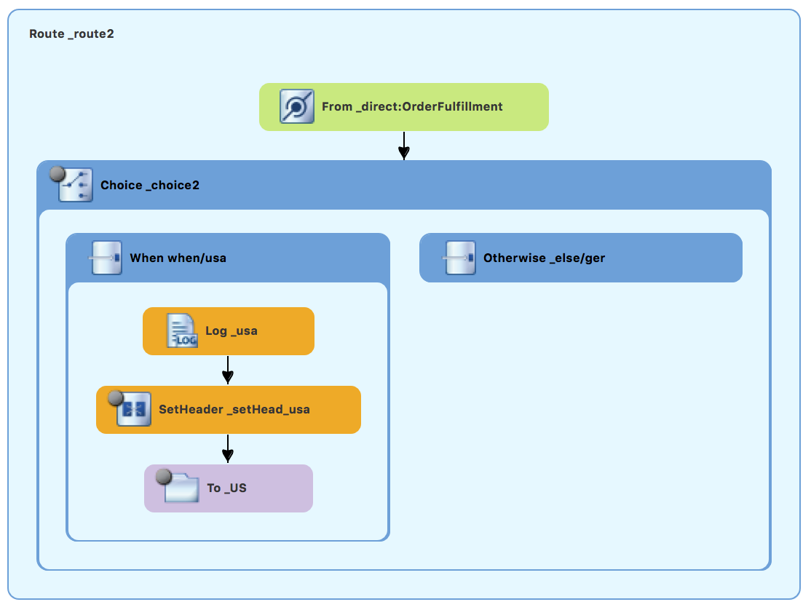The Choice_choice2 container expands to accommodate the When_when2 node.
On the canvas, select the When_when2 node to open its properties in the Properties editor.
In the Properties editor:
Select
xpathfrom the Language drop-down menu.Enter
/order/customer/country = 'Germany'in the Expression field.Leave Trim enabled.
Enter
_when/gerin the Id field.
In the Palette, open the Transformation drawer and drag a Set Header pattern (
) to the canvas and drop it on the
When_when/ger node: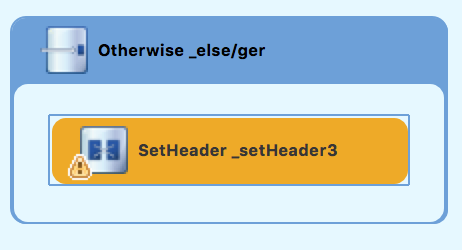The When_when/ger container expands to accommodate the SetHeader_setHeader3 node.
On the canvas, select the SetHeader_setHeader3 node to open its properties in the Properties editor.
In the Properties editor:
Select from the drop-down menu.
Enter
Germanyin the Expression field.Leave Trim as is.
Enter
Destinationin the Header Name field.Enter
_setHead_gerin the Id field.
In the Palette, open the Components drawer and drag a Log pattern (
) to the canvas and drop it in the
When_when/ger container.The When_when/ger container expands to accommodate the Log_log3 node.
On the canvas, select the SetHeader_setHead_ger node and drag its connector arrow over the Log_log3 node, and then release it:
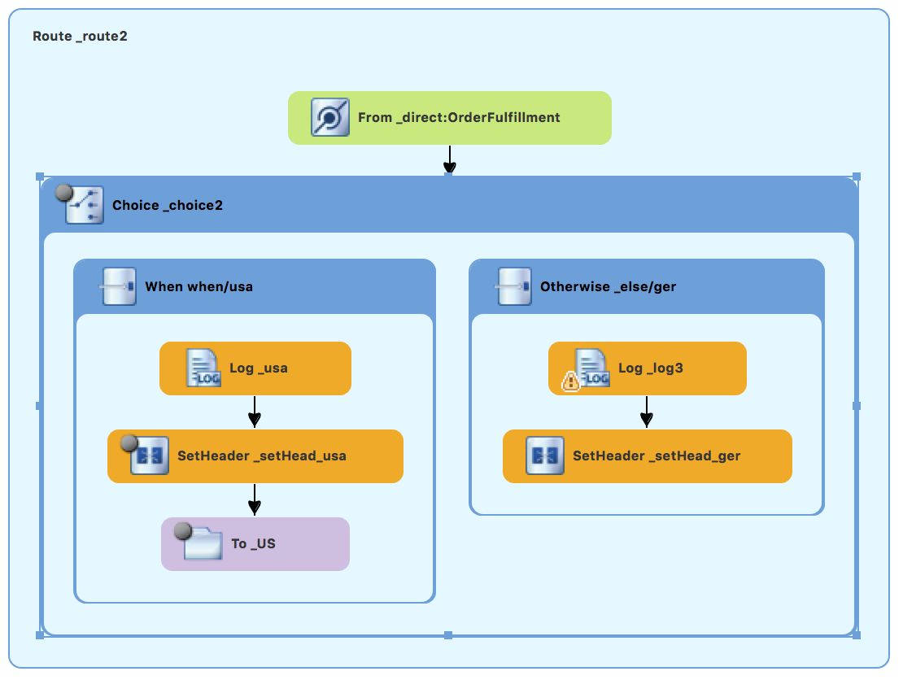On the canvas, select the Log_log3 node to open its properties in the Properties editor.
In the Properties editor:
Enter
Valid order - ship animals to Germany customerin the Message field.Enter
_gerin the Id field.Leave the Logging Level as is.
From the Components drawer, drag a File pattern (
) to the canvas and drop it in the
When_when/ger container.The When_when/ger container expands to accommodate the To_to1 node.
On the canvas, select the Log_ger node and drag its connector arrow over the To_to1 node, and then release it:
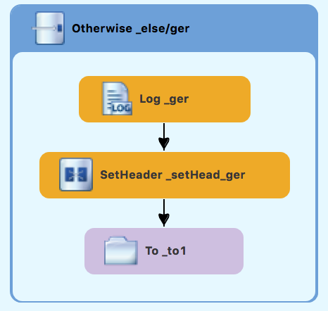On the canvas, select the To_to1 node to open its properties in the Properties editor.
In the Properties editor:
Replace
directoryNamewithtarget/messages/Germanyin the Uri field.Enter
_GERin the Id field.
On the menu bar, click > to save the routing context file.
The Germany branch of Route_route2 should look like this:
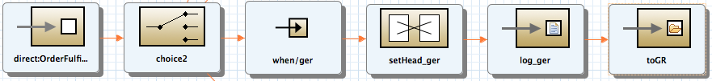
With Route_route2 displayed on the canvas:
In the Palette, open the Routing drawer and drag an Otherwise pattern (
) to the canvas and drop it in the
Choice_choice2 container: 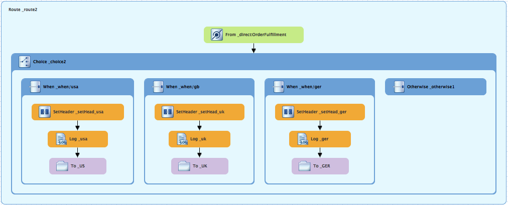The Choice_choice2 container expands to accommodate the Otherwise_otherwise1 node.
On the canvas, select the Otherwise_otherwise1 node to open its properties in the Properties editor.
In the Properties editor, enter
_else/frin the Id field.In the Palette, open the Transformation drawer and drag a Set Header pattern (
) to the canvas and drop it on the
Otherwise_else/fr node: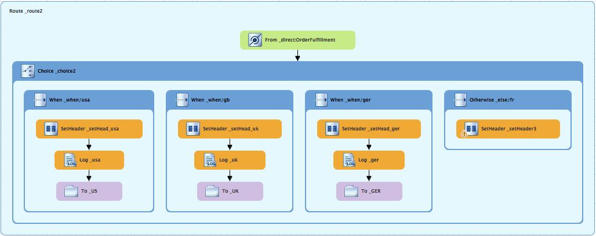The Otherwise_else/fr container expands to accommodate the SetHeader_setHeader3 node.
On the canvas, select the SetHeader_setHeader3 node to open its properties in the Properties editor.
In the Properties editor:
Select from the drop-down menu.
Enter
Francein the Expression field.Leave Trim as is.
Enter
Destinationin the Header Name field.Enter
_setHead_frin the Id field.
In the Palette, open the Components drawer and drag a Log pattern (
) to the canvas and drop it in the
Otherwise_else/fr container.The Otherwise_else/fr container expands to accommodate the Log_log3 node.
On the canvas, select the SetHeader_setHead_fr node and drag its connector arrow over the Log_log3 node, and then release it:
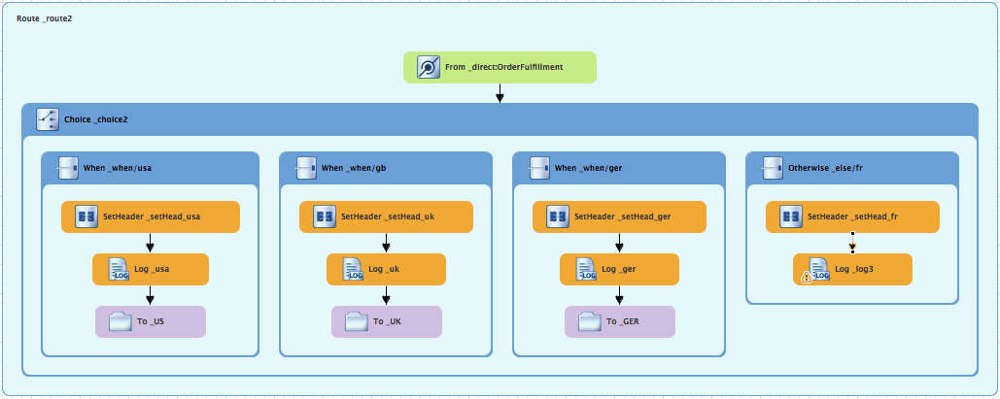On the canvas, select the Log_log3 node to open its properties in the Properties editor.
In the Properties editor:
Enter
Valid order - ship animals to France customerin the Message field.Enter
_frin the Id field.Leave the Logging Level as is.
From the Components drawer, drag a File pattern (
) to the canvas and drop it in the
Otherwise_else/fr container.The Otherwise_else/fr container expands to accommodate the To_to1 node.
On the canvas, select the Log_fr node and drag its connector arrow over the To_to1 node, and then release it:
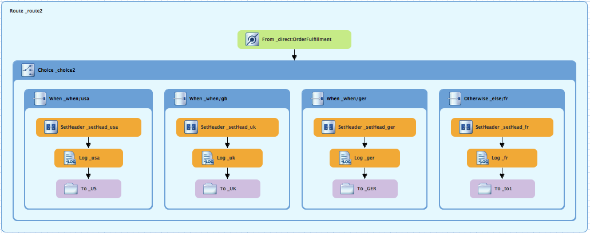On the canvas, select the To_to1 node to open its properties in the Properties editor.
In the Properties editor:
Replace
directoryNamewithtarget/messages/Francein the Uri field.Enter
_FRin the Id field.
On the menu bar, click > to save the routing context file.
The France branch of Route_route2 should look like this:
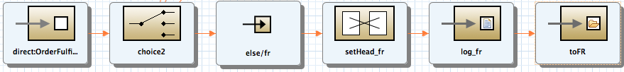
If needed, on the menu bar, select > to save the routing context.
The routes on the canvas should look like this:
Click the Source tab at the bottom, left of the canvas to display the XML for the route.
The
camelContextelement should look like that shown in Example 4:Example 4. XML for dual-route content-based router
<?xml version="1.0" encoding="UTF-8"?> <blueprint xmlns="http://www.osgi.org/xmlns/blueprint/v1.0.0" xmlns:xsi="http://www.w3.org/2001/XMLSchema-instance" xsi:schemaLocation="http://www.osgi.org/xmlns/blueprint/v1.0.0 https://www.osgi.org/xmlns/blueprint/v1.0.0/blueprint.xsd http://camel.apache.org/schema/blueprint http://camel.apache.org/schema/blueprint/camel-blueprint.xsd"> <camelContext id="_context1" xmlns="http://camel.apache.org/schema/blueprint"> <route id="_route1" shutdownRoute="Default"> <from id="_from1" uri="file:src/data?noop=true"/> <choice id="_choice1"> <when id="_when1"> <xpath>/order/orderline/quantity/text() > /order/orderline/maxAllowed/text()</xpath> <log id="_log1" message="quantity exceeds the maximum allowed - contact customer"/> <setHeader headerName="Destination" id="_setHeader1"> <constant>InvalidOrders</constant> </setHeader> <to id="_Invalid" uri="file:target/messages/invalidOrders"/> </when> <otherwise id="_else2"> <log id="_log2" message="valid order - process"/> <setHeader headerName="Destination" id="_setHeader2"> <constant>Dispatcher</constant> </setHeader> <to id="_Fulfill" uri="direct:OrderFulfillment"/> </otherwise> </choice> </route> <route id="_route2"> <from id="_direct:OrderFulfillment" uri="direct:OrderFulfillment"/> <choice id="_choice2"> <when id="_when/usa"> <xpath>/order/customer/country = 'USA'</xpath> <setHeader headerName="Destination" id="_setHead_usa"> <constant>USA</constant> </setHeader> <log id="_usa" message="Valid order - ship to USA customer"/> <to id="_US" uri="file:target/messages/USA"/> </when> <when id="_when/gb"> <xpath>/order/customer/country = 'Great Britain'</xpath> <setHeader headerName="Destination" id="_setHead_uk"> <constant>UK</constant> </setHeader> <log id="_uk" message="Valid order - ship animals to UK customer"/> <to id="_UK" uri="file:target/messages/GreatBritain"/> </when> <when id="_when/ger"> <xpath>/order/customer/country = 'Germany'</xpath> <setHeader headerName="Destination" id="_setHead_ger"> <constant>Germany</constant> </setHeader> <log id="_ger" message="Valid order - ship to Germany customer"/> <to id="_GER" uri="file:target/messages/Germany"/> </when> <otherwise id="_else/fr"> <setHeader headerName="Destination" id="_setHead_fr"> <constant>France</constant> </setHeader> <log id="_fr" message="Valid order - ship animals to France customer"/> <to id="_FR" uri="file:target/messages/France"/> </otherwise> </choice> </route> </camelContext> </blueprint>
![[Important]](imagesdb/important.png) | Important |
|---|---|
If the tooling added the attribute |
You can run the new route as described in Running the route.
Check the end of the Console's output. You should see these lines:
Check the target destinations in Project Explorer to verify that the routes executed properly:
Select
CBRroute.Right-click it to open the context menu, then select .
Expand the folder
target/messages/as shown in Figure 4. Themessage*.xmlfiles should be dispersed in your target destinations like this:Note To view message content, double-click a message to open it in the route editor's XML editor.
To learn more about the direct component see the Red Hat JBoss Fuse: Apache Camel Component Reference at Red Hat JBoss Fuse 6.3 documentation